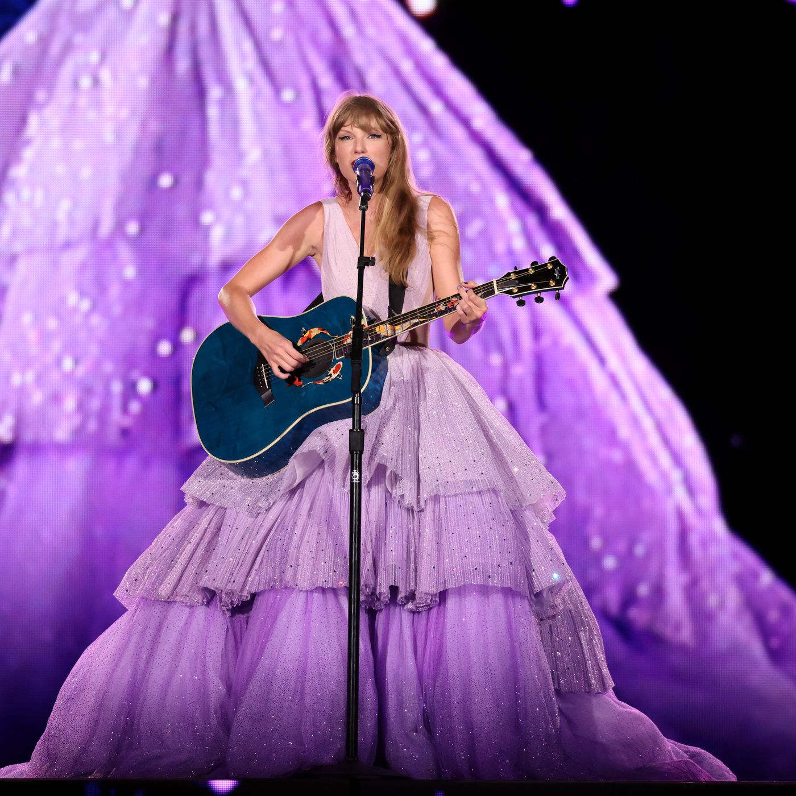

.png)
"SPEAK NOW (Taylor's Version)" offers a nostalgic journey back to Taylor Swift's 2010 album, re-recorded with a newfound sense of autonomy and maturity.
It delves into themes of love, heartache, and self-expression, echoing the sentiments of its predecessor while infusing fresh perspectives and emotions.
Swift's evocative storytelling shines through poignant tracks like "Dear John" and "Last Kiss," capturing the complexities of relationships with raw honesty and vulnerability.
From spirited anthems like "Mine" to tender ballads like "Enchanted," the album showcases Swift's growth as both a songwriter and a person over the past decade.
"SPEAK NOW (Taylor's Version)" stands as a testament to Swift's unwavering dedication to her craft and her unwavering connection with her audience.
In the buildup to the release of "SPEAK NOW (Taylor's Version)," Swift delighted fans with a plethora of Easter eggs strategically scattered throughout her social media, music videos, and interviews.
From subtle nods in her Instagram captions to deliberate references in interviews, Swift cleverly teased hints about the reimagined album.
Retro-inspired visuals, hidden messages in lyric booklets, and callbacks to iconic moments from the original era kept fans eagerly deciphering clues and speculating about what surprises lay in store.
These meticulously planted Easter eggs not only built anticipation for "SPEAK NOW (Taylor's Version)" but also fostered a sense of community and shared excitement among Swift's dedicated fanbase, reaffirming her status as a master storyteller and engaging artist.
